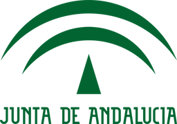

<ion-footer class="ion-no-border">
  <ion-toolbar>
    <ion-grid>
      <ion-row class="ion-align-items-start">
        <ion-col>
          
        </ion-col>
        <ion-col size-lg="11.6" size-md="11" size-sm="11">
          <h6 class="ion-no-margin">VIRTRAEL © 2015</h6>
          <p class="ion-no-margin">Proyecto de excelencia TIC-6600 de la Junta de Andalucía.</p>
          <p id="creative_commons" class="ion-no-margin">Los símbolos pictográficos utilizados de ARASAAC
            <a href="http://catedu.es/arasaac/" target="_blank">(http://catedu.es/arasaac/)</a>
            son parte de una obra colectiva propiedad de la Diputación General de Aragón y han sido creados bajo licencia
            <a href="https://creativecommons.org/licenses/by-nc-sa/3.0/es/" target="_blank">Creative Commons</a>.
            </p>
        </ion-col>
      </ion-row>
    </ion-grid>
  </ion-toolbar>
</ion-footer>
